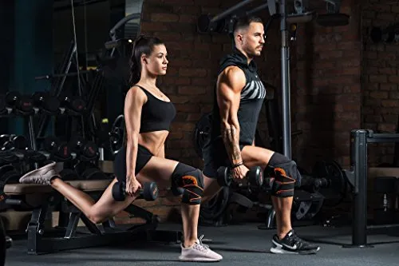

5 Tips for a Successful Workout Routine
Posted on May 10, 2023

1. Set Clear and Realistic Goals: Before starting your workout routine, it's important to set clear and realistic goals. Whether you want to build strength, lose weight, improve cardiovascular fitness, or enhance flexibility, defining specific goals will help you stay focused and motivated. Make sure your goals are attainable and measurable, allowing you to track your progress along the way.
2. Plan and Schedule Your Workouts: Consistency is key when it comes to a successful workout routine. Plan your workouts in advance and schedule them into your daily or weekly calendar. Treat your workout sessions as important appointments that you prioritize and stick to. By having a well-structured schedule, you're more likely to stay committed and make exercise a regular habit.
3. Warm-Up and Cool Down: Prior to each workout, dedicate time to warm up your body and prepare it for the exercises ahead. Warm-up activities can include dynamic stretches, light cardio exercises, or mobility drills to increase blood flow and loosen up your muscles. Similarly, after your workout, cool down with static stretching and light movements to gradually decrease your heart rate and prevent muscle soreness.
4. Listen to Your Body: Pay attention to your body's signals during your workout routine. It's important to differentiate between muscle fatigue and pain. Pushing yourself to reach new limits is great, but be mindful of any discomfort or signs of injury. If something feels off or painful, modify the exercise or take a break to prevent potential injuries. Rest and recovery days are also crucial for allowing your body to repair and grow stronger.
5. Fuel Your Body with Proper Nutrition: Proper nutrition goes hand in hand with a successful workout routine. Eat a well-balanced diet that provides the necessary nutrients to support your fitness goals. Prioritize lean proteins, whole grains, fruits, vegetables, and healthy fats. Hydrate adequately before, during, and after workouts to maintain optimal performance and aid in recovery.